京张共长线：百年京张 AI 创新带城市设计方案
以 8-80 同等服务契约统筹空间更新、公共服务和人工智能应用，形成一轴三片、两翼协同、多点支撑的城市设计方案。
京张共长线 / GROW WITH JINGZHANG
京张共长线面向百年京张 AI 创新带的长期建设，提出一套可复算、可分期、可退出的城市设计方案。方案以京张铁路遗产廊道为发展轴，组织三处重点片区、十二处公共服务节点和六个近期项目包；以“8-80 同等服务契约”约束人工智能应用，保障儿童、长者、残障人士及其他使用者均可通过人工或非数字渠道完成基本公共服务。
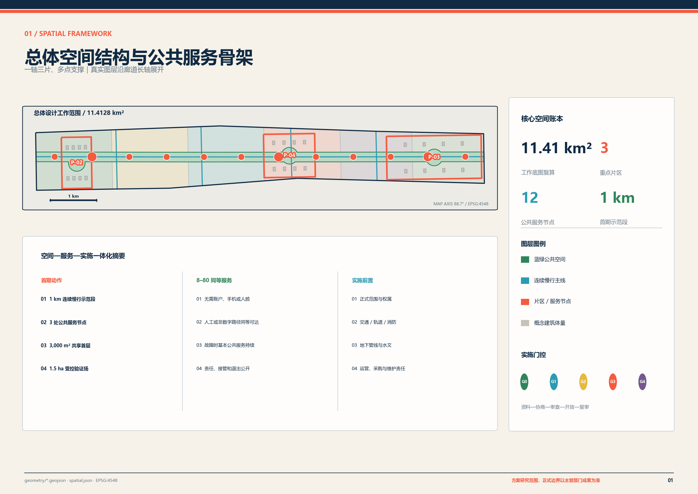
设计依据与资料清单
本次成果对应征集任务书确定的三层工作范围：43.6 平方公里统筹研究范围、约 11.4 平方公里总体设计范围，以及众智园、北京 AI 原点社区和大钟寺三处重点片区。公告公布了重点片区名称和约面积，尚未公布正式四至。提交的 SITE_BOUNDARY 和 KEY_AREA 图层依据资料包及公告线索形成工作底图，属性统一登记为 official_boundary=false、geometry_role=provisional_constraint。[source:OFFICIAL-ANNOUNCEMENT] [source:SITE-PACKAGE] [assumption:A-BOUNDARY-001]
方案采用四类证据状态：
| 状态 | 定义 | 本成果中的典型内容 | 使用要求 | |---|---|---|---| | 公开事实 | 公告、任务书或正式公开资料直接载明 | 三层范围、三处重点片区名称及公告面积 | 保留来源编号和原始口径 | | 复算值 | 由提交的空间数据或公开数据计算 | 工作底图面积、概念蓝绿空间比例、气候基线 | 同步说明公式、坐标系和置信度 | | 建议目标 | 用于方案比选和后续专项设计 | 步行净宽、骑行净宽、休憩点间距、遮阴比例 | 明确标注“未实施”，不表达为现状成绩 | | 未知项 | 当前资料不足以形成专业结论 | 正式红线、权属、容积率、逐栋现状、市政容量 | 保持未知，进入实施前资料清单 |
城市设计方法参考巴黎近邻生活、维也纳包容性规划、Punggol 产学政社协同、Kalasatama 敏捷试点、Barcelona 公共空间重构、Kendall Square 混合使用和 Paris-Saclay 科研生活一体化。案例用于提炼设施复用、复杂出行链、共测机制和公共空间组织方法；北京地区的空间控制以法定规划和专项审查为准。[source:CASE-VIENNA-GENDER] [source:CASE-PUNGGOL] [source:CASE-KALASATAMA]
方案总则：8-80 同等服务契约
“8-80”用于检验公共空间和人工智能服务的最低可达性。每项公共服务须同时满足四项条件：儿童和长者能够理解使用流程；残障使用者具备连续到达条件；人工或非数字服务与数字服务同等可达；责任主体、接管方式、申诉渠道和退出条件公开。
人工智能服务执行八条准入规则：责任主体明确、同等服务路径完整、数据采集保持最少、禁止将生物识别设为服务条件、人工接管有效、停止权限清晰、服务信息公开、运行证据可留存。十二项场景已通过协议桌面校验；八类缺陷注入测试均由预期规则拦截。该结果证明运行表字段和拦截逻辑具备可复算性，项目授权、场地安全和服务质量仍由后续法定程序及现场测试确认。[data:visual/assets/growth-runbook.json] [data:visual/assets/growth-tabletop-evidence.json]
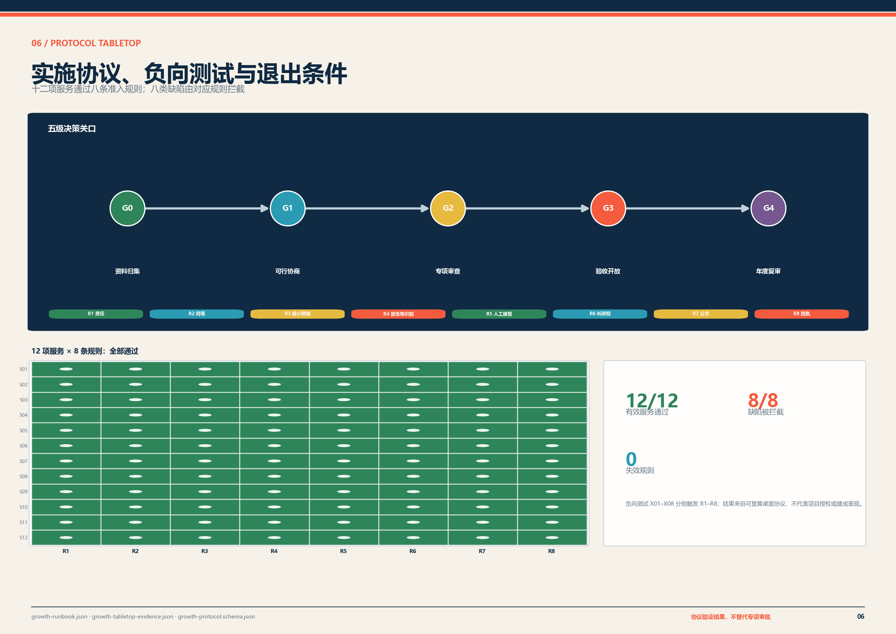
三层范围工作框架
| 工作层级 | 核心任务 | 方案成果 | 进入下一阶段的条件 | |---|---|---|---| | 43.6 km² 统筹研究范围 | 研判产业、人才、生活服务和区域协作关系 | “研究—开源—转化—试用—维护—复盘”创新链及五类区域接口 | 区域协作单位、输入清单和交付责任形成书面接口 | | 约 11.4 km² 总体设计范围 | 组织城市结构、复合功能、慢行蓝绿和更新序列 | 一轴三片、两翼协同、十二处公共服务节点和六类方案分区 | 正式边界、控规条件和现状调查纳入统一底图 | | 368.4 ha 三处重点片区 | 形成可启动的空间设计和项目包 | 众智园验证场、AI 原点共享首层、大钟寺站城公共厅先导界面 | 权属、交通、消防、市政、无障碍和运营协议通过审查 |
三层工作范围分别对应区域接口研究、控规深度城市设计和重点片区项目化设计，并通过统一空间底图、指标口径和实施关口保持衔接。[depth:three_level_scope_framework]
统筹研究范围产业与未来城市研究
统筹研究范围围绕五类接口组织协作：高校与开源社区提供研究问题和公开方法；企业与测试机构承担工程验证；社区及公共服务单位提出日常服务需求；站区和交通单位核对接驳与安全条件；园林、市政和维护单位评估全生命周期投入。每类接口登记输入、输出、责任主体、进入条件和退出条件，形成可追踪的区域协作回执。[data:visual/assets/regional-collaboration-ledger.json]
产业研究按照“基础研究—开源工具—工程验证—场景试用—设施维护—年度复盘”组织创新链，分别明确空间载体和交付责任。基础研究与开源环节优先使用高校、科研机构及公共技术平台的既有空间；工程验证进入众智园受控测试环境；场景试用连接社区、站区和公共服务设施；维护与复盘由运营单位、一线人员和独立评估主体共同完成。区域接口不预设合作机构已经承诺参与，后续以书面任务单、数据授权和服务协议确认责任。[depth:overall_spatial_structure]
未来城市研究聚焦人才全周期服务、近邻生活、复合出行、气候适应和公共服务数字化五项议题。对应成果包括人才与家庭服务清单、跨区通勤和站城接驳分析、蓝绿设施生命周期账本、人工与非数字服务基线，以及分群体的使用负担记录。现阶段缺少企业和人才名录、跨区 OD、岗位结构、租金变化及设施容量等连续数据，项目启动后由责任单位依照统一字段补充，形成年度区域协作报告并据此调整项目排序。[source:PROCESSED-FACT-PACK] [metric:osm_context_feature_count]
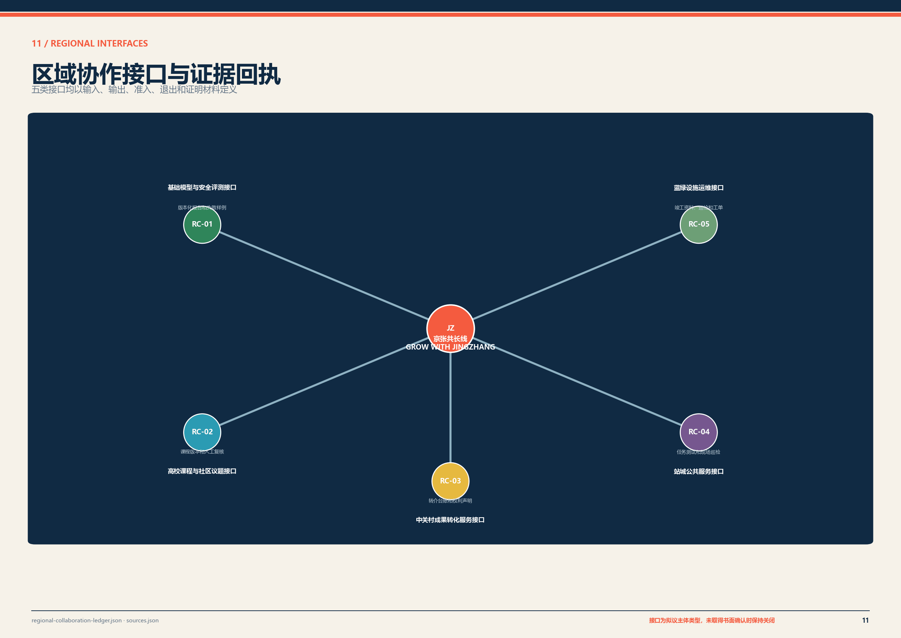
总体设计范围城市更新与控规深度城市设计
总体形成“一轴三片、两翼协同、多点支撑”的空间结构。
- 京张创新发展轴依托铁路遗产廊道，连续组织步行、骑行、林荫、雨水设施、公共服务和文化信息。
- 三处重点片区分别承担受控验证、社区协同创新和站城公共服务职能。
- 东西两翼衔接中关村技术服务资源和小月河应用场景资源，通过项目接口落实协作。
- 十二处公共服务节点提供人工咨询、休憩、饮水、充电、纸质导向、设施维护和场景信息公示。
工作底图复算面积为 11,412,825.386 平方米。该数值用于方案图层校核；正式总体设计范围由主管部门成果确定。[data:geometry/site_boundary.geojson#SITE-001] [metric:site_area_sqm]
用地、建筑规模与拆改留方案
方案采用六类复合功能分区覆盖总体设计工作底图，分区之间共享边界并保持拓扑闭合。六类分区包括研发与责任试作、人才居住与代际服务、共同学习与成果转化、京张文化与公共服务、AI 生活服务与创新商业、蓝绿开放与弹性基础设施。图层中的用地代码用于方案数据交换和功能组织，不对应法定用地审批结论。[data:geometry/land_use.geojson#LU-01] [standard:MNR-LAND-USE-CLASSIFICATION-GUIDE]
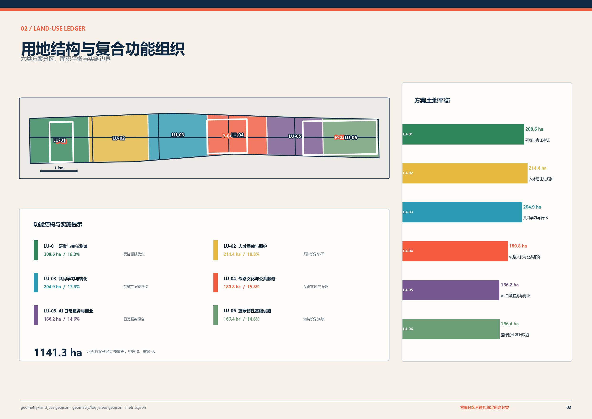
建筑更新执行“调查—评价—分类—实施”程序。逐栋调查记录产权、用途、层数、结构、消防、历史文化价值和运行状态；综合评价后形成保留、修缮、适应性再利用、局部更新或必要拆除建议。当前建筑图层仅表达重点片区的概念空间颗粒，未形成逐栋处置结论。近期项目优先采用首层轻改造、闲置时段共享、可拆装设施和公共界面整治。[data:geometry/buildings.geojson#BLDG-01-01] [depth:retain_renovate_demolish]
容积率、建筑高度、建筑密度、退线、停车配建和市政容量保持为未知项，待控规、城市更新实施方案和专项论证确定。[metric:floor_area_ratio] [assumption:A-CONTROLS-001]
重点区域详细设计
三处片区采用同一技术框架：公告面积与底图复算值并列，首期项目设置空间预算，保留改造策略明确调查前提，开放条件与停止条件同时登记。[depth:three_key_area_detailed_design] [data:geometry/key_areas.geojson]
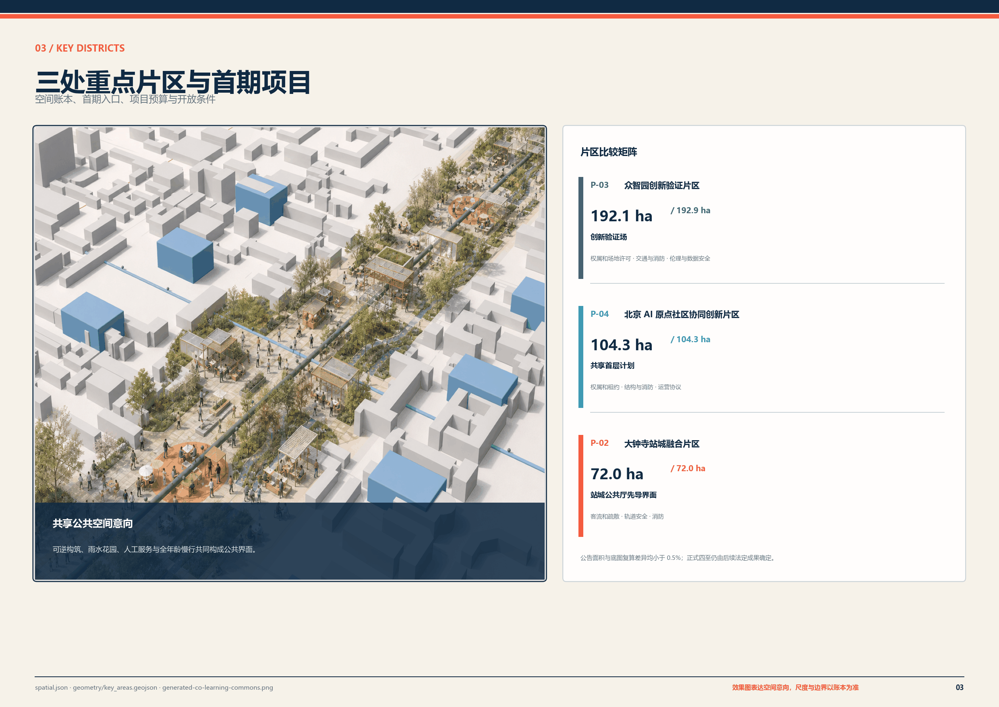
6.1 众智园创新验证片区
片区公告面积约 192.1 公顷，工作底图复算 192.92 公顷。功能定位为受控测试、公众审议和设施运维。首期设置约 1.5 公顷创新验证场，空间预算包括 3,200 平方米受控测试与安全缓冲、900 平方米公众审议与信息公示、1,200 平方米设施运维实训、2,800 平方米雨水花园和生态缓冲，以及 6,900 平方米全龄测试环、消防及后勤通道。
验证场采用可逆构造，保留既有园区通行和公共服务。建筑利用对象在权属、结构和消防核验后确定；现状调查完成前不提出拆除。开放前须取得场地许可，完成交通消防、伦理数据、安全评估和独立测试准入。发生重大事件或连续两轮整改未通过时，停止测试并开展独立复核。
6.2 北京 AI 原点社区协同创新片区
片区公告面积约 104.3 公顷，工作底图复算 104.32 公顷。功能定位为学习协作、开源发布、人才服务和家庭支持。首期盘活约 3,000 平方米共享首层，其中学习与议事空间 900 平方米，开源发布及短期展陈 600 平方米，人工人才服务和家庭支持 520 平方米，共享工作及小型原型空间 680 平方米，后勤、无障碍和消防调整预留 300 平方米。
共享首层采用分时开放和轻改造方式。实施前核对产权、租约、房屋安全、消防和分时运营协议，公布开放时段、收费规则和人工服务安排。固定改造条件未成立时，项目调整为短期活动和临时共享，不形成长期占用。
6.3 大钟寺站城融合片区
片区公告面积约 72.0 公顷，工作底图复算 72.05 公顷。功能定位为轨道接驳、城市信息、人工服务和公共停留。首期研究约 2.4 公顷站城公共厅界面，完善四向步行联系，设置两处人工服务点、多语言实体导向和全龄友好停留设施，并与京张创新发展轴示范段衔接。
实施顺序为客流和疏散分析、轨道安全接口确认、产权及商业运营协议、导向及铺装改造、服务节点建设。疏散、客流或轨道安全条件未通过时，保留导向和人工服务改善，暂停空间扩建。
交通、轨道、市政与公共服务设施
交通系统按行动速度较慢、识别能力较弱和携带行李等使用情形校核。京张创新发展轴示范段建议连续步行净宽不小于 3.0 米、双向骑行净宽不小于 4.0 米，主要有效休憩点间距不大于 150 米。上述数值属于方案建议，工程设计阶段根据道路红线、轨道安全、消防、市政管线和现状树木条件进行组合调整。[source:BEIJING-WALK-CYCLE-STANDARD] [metric:pilot_walk_clear_width_target_m] [metric:rest_point_spacing_target_max_m]
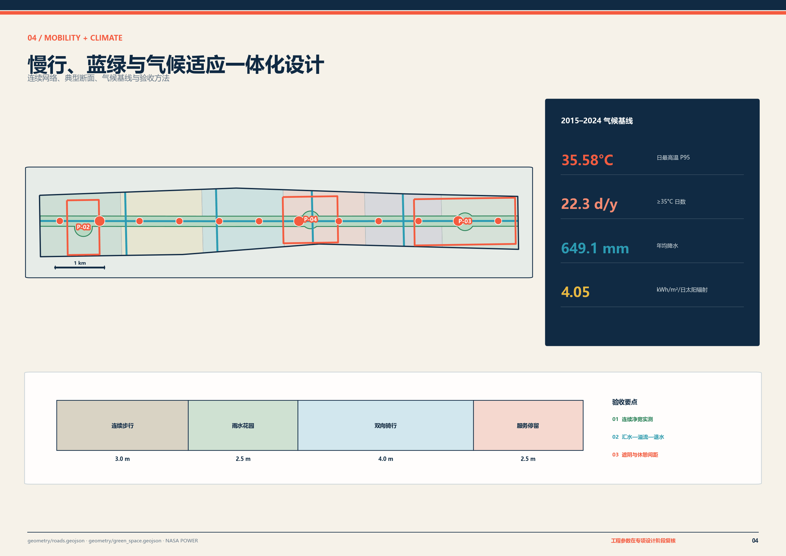
蓝绿空间、公共空间与城市风貌
蓝绿公共空间体系承担遮阴、雨水调蓄、连续休憩和生态教育。NASA POWER 2015—2024 日尺度数据用于概念阶段气候基线：日最高温 P95 为 35.58°C，年均 ≥35°C 日数约 22.3 天，年均降水约 649.1 毫米，太阳辐射均值 4.05 kWh/m²/日。方案设置连续遮阴、雨水花园、安全溢流、冬季向阳避风和可维护设施。详细水文、热环境、风环境及能源参数由现场监测和专项模型确定。[source:NASA-POWER-2015-2024] [source:BEIJING-SPONGE-CITY] [depth:blue_green_public_space]

公共服务节点标准
公共服务节点建议面积 250—400 平方米，采用可拆装构件。每处节点配置 24—36 平方米人工服务空间、遮阴停留、饮水、充电、纸质地图、服务信息公示和雨水花园。基本服务在断网、停电或数字系统暂停期间保持可用。节点建设须完成地下管线、消防、无障碍、设施接入、场地许可和维护责任核查。
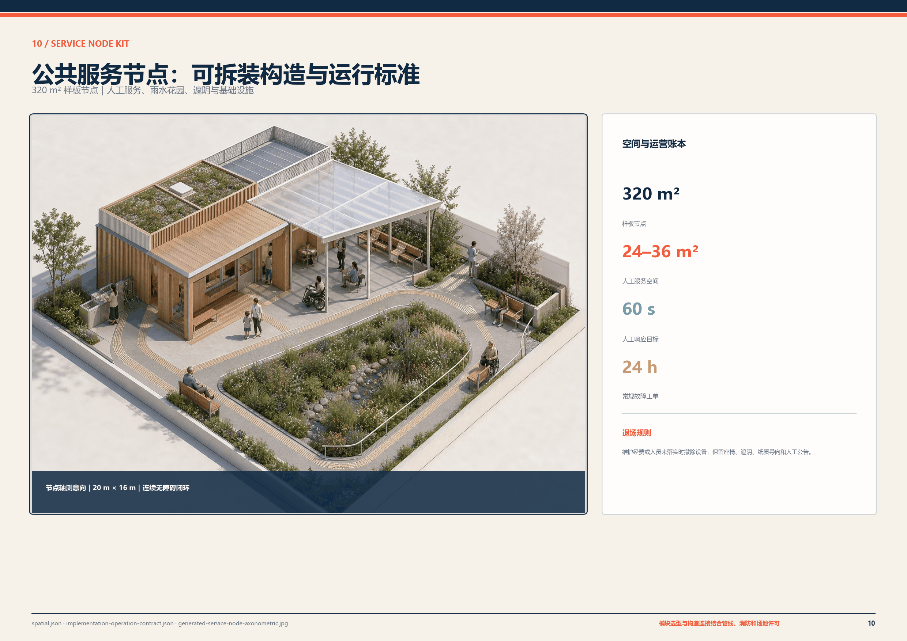
AI 创新生态、人才画像与 AI+ 场景
十二项场景均登记服务对象、空间载体、最少数据、人工接管、停止权限、证据回执和退出条件。四项场景列为近期受控测试，其余场景随空间和运营条件分期推进。
| 编号 | 场景与空间载体 | 数据边界 | 人工路径与退出条件 | |---|---|---|---| | S01 | 大钟寺人工智能素养互动空间 | 不采集人脸和身份信息 | 现场教育员及实体展项；内容风险未闭环时暂停 | | S02 | 京张文化多语言导览 | 自愿选择语言，不建立访客画像 | 人工导览和纸质地图同步提供 | | S03 | AI 原点青年城市议题工作室 | 匿名问题卡 | 教师或社区导师复核后公开 | | S04 | 学习与职业辅助服务 | 本地短时会话，不进入正式评价 | 教师或咨询师复核，可转人工 | | S05 | 跨代数字服务站 | 免账户办理，记录最少工单信息 | 志愿者面对面支持并保留纸质流程 | | S06 | 无障碍路线共绘 | 自愿标注障碍点，仅发布汇总信息 | 无障碍顾问审图，异议可撤回 | | S07 | 儿童安全对话系统评测 | 合成数据优先 | 监护人和伦理负责人可立即终止 | | S08 | 低速机器人全龄测试 | 仅设备遥测，不采集旁观者身份 | 安全员接管，实体绕行路径常开 | | S09 | 隐私保护学习工具测试 | 自愿样本，最少化输入 | 教师复核，与正式教学评价分离 | | S10 | 端侧离线与能耗测试 | 设备级性能数据 | 工程师签字，未达标设备退出公共环境 | | S11 | 设施运维实训 | 工单去标识 | 专业人员复核并公开维修手册 | | S12 | 服务信息公示与公众反馈 | 汇总证据，不进行个人排名 | 独立审议，到期复审并公开处理结果 |
医疗、法律、教育和公共安全相关输出作为辅助信息，由具备相应资质的专业人员复核。服务信息公示包含用途、适用人群、数据范围、责任单位、人工路径、故障状态、投诉方式和退出日期。[source:PRINCIPLE-UNHABITAT] [data:visual/assets/growth-runbook.json]

公共利益与包容性影响
包容性台账覆盖九类人群：儿童及家庭、长者及照护者、残障人士、长期居民、租户及小商户、学生及青年人才、通勤者及访客、一线服务人员、周边机构。每类人群分别登记主要受益、潜在负担、资料盲区、实施前输入和程序性权利。使用人数、收入变化、租金影响和实际出行障碍等未调查数据保持为空，不以全体平均值替代群体差异。
程序性权利包括提前知情、参与共测、提交异议、申请无障碍合理便利、要求人工服务、提出停止请求和取得处理回执。涉及儿童、残障人士、租户及一线维护人员的项目，在 G1 可行协商阶段完成专项走查和意见记录。[data:visual/assets/inclusion-ledger.json] [data:visual/assets/user-cotest-plan.json]
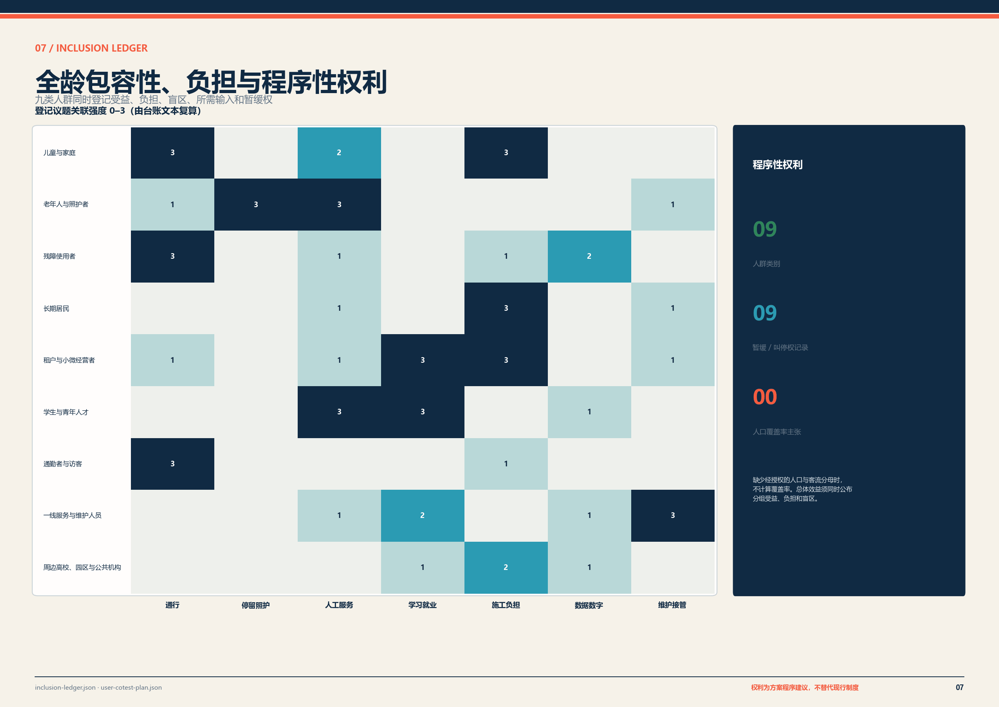
品牌与公共信息
项目中文名“京张共长线”，英文名“GROW WITH JINGZHANG”。名称中的“共长”指向不同年龄、职业和使用能力的人群共同使用、共同评议和持续修正。标志由两条轨线、三组年轮和开放缺口组成：轨线对应京张铁路的时间与空间连续性，年轮对应不同世代，开放缺口对应反馈、申诉和退出。
公共橙用于服务入口、警示和退出信息；铁路墨用于主体结构；林荫绿用于蓝绿公共空间；证据蓝用于数据和复算内容。品牌名称不替代法定地名、审批项目名称或运营主体名称。
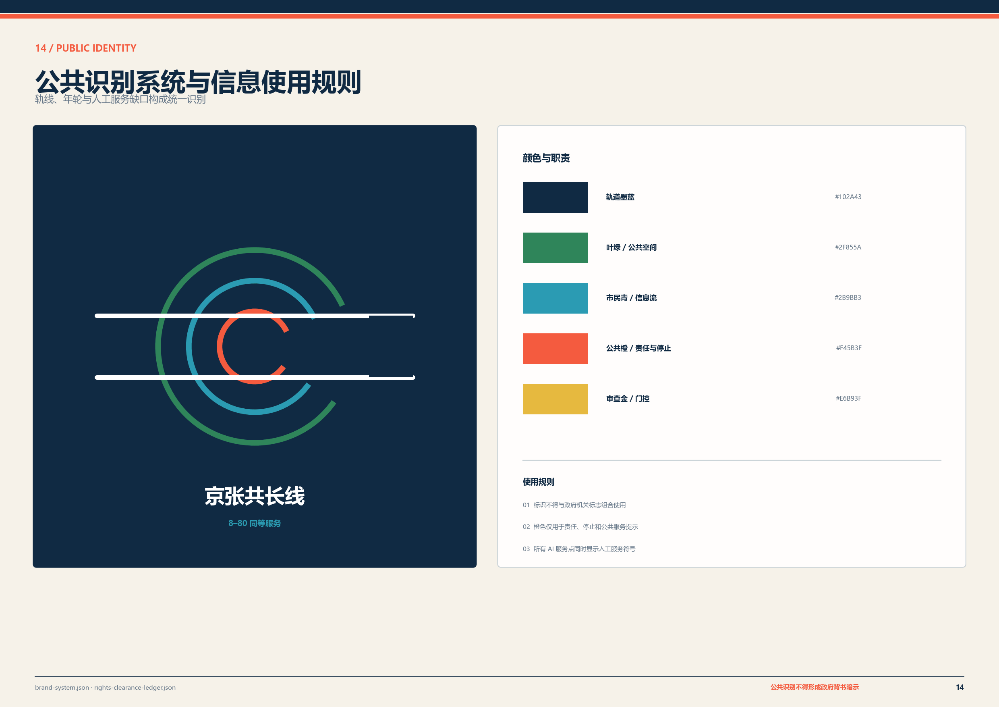
更新项目清单、实施政策与分期计划
六个近期项目包分别为京张创新发展轴示范段、大钟寺站城融合先导工程、众智园创新验证场、AI 原点社区共享首层、公共服务节点样板、AI 公共服务治理系统。投资级别 S、M、L 用于概念阶段排序，分别对应 500 万元以内、500—2,000 万元和 2,000—5,000 万元的比较区间；实际投资以可行性研究、设计概算和财政评审为准。
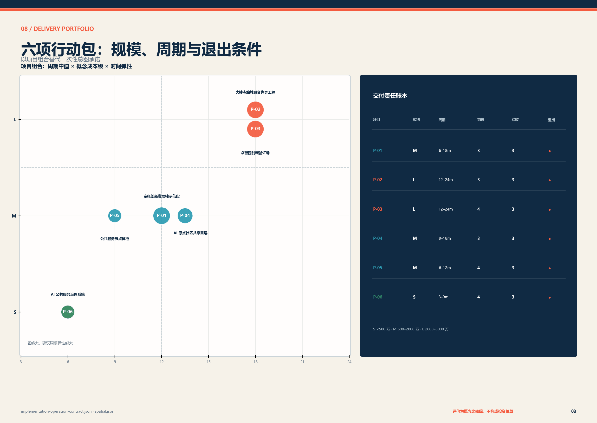
项目执行五级决策关口：
| 关口 | 通过条件 | 停止或退回条件 | |---|---|---| | G0 资料归集 | 边界、权属、现状、来源和数据缺口登记完成 | 资料来源、授权状态或责任单位无法识别 | | G1 可行协商 | 受影响人群、维护主体、人工路径和负担处理方案形成记录 | 关键人群负担、运营经费或维护责任未处理 | | G2 专项审查 | 交通、轨道、消防、市政、无障碍、数据和场景准入完成 | 任一法定或安全接口未通过 | | G3 验收开放 | 工程验收、人员培训、急停和降级演练完成 | 人工接管、应急能力或公开回执缺失 | | G4 年度复审 | 绩效、负担、故障、维护和公众意见形成公开报告 | 未达到门槛时调整、缩减或退出 |
同一技术供应商不得同时承担实施、验收和异议裁决。每个项目包明确负责、批准、协商和知情主体，公开维护周期和退出条件。[data:visual/assets/implementation-operation-contract.json]
90 天共测计划
实施前开展 90 天共测：0—15 天锁定边界、权属、使用者、责任和数据清单；16—45 天在无建设条件下模拟服务流程和人工接管；46—75 天注入设备故障、信息误导、群体排斥和维护中断；76—90 天公开证据并决定实施、缩减、整改或退出。
参与结构包括使用者、运营者、专业单位和受影响权利人。每阶段形成公开回执，记录样本范围、知情同意、任务完成、使用障碍、故障接管、整改闭环和异议处理。共测结果作为项目决策依据，法定审批和工程验收按规定另行实施。[data:visual/assets/user-cotest-plan.json]
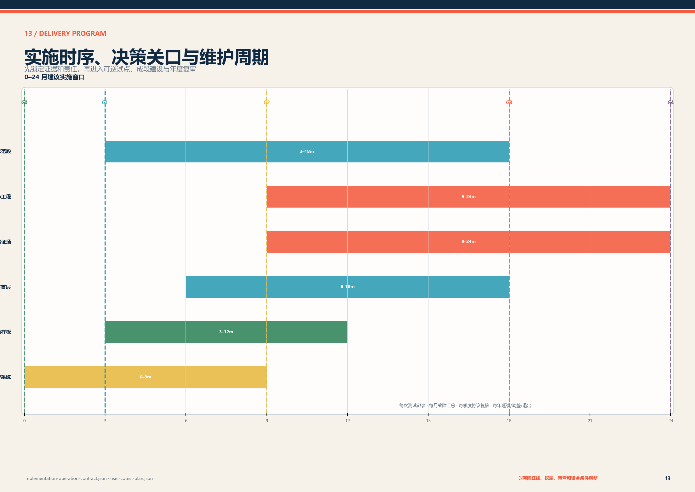
指标体系、面积复算与合规矩阵
指标分为工作底图复算、概念方案复算、建议控制值、运营目标和桌面验证结果。图表同时列出当前状态、测量方法和责任主体，未调查或未运行项目保持未知。[metric:green_ratio] [metric:public_space_ratio] [depth:metrics_recalculation]
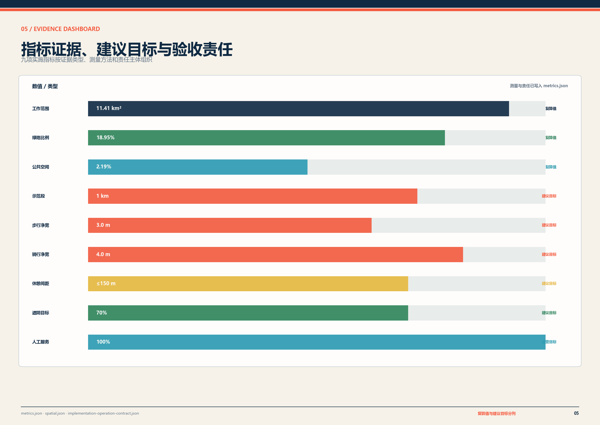
| 指标 | 数值或状态 | 属性 | 测量与复核 | |---|---:|---|---| | 总体设计工作底图 | 11.4128 km² | 复算值 | EPSG:4548 投影面积；正式值由主管部门确认 | | 概念蓝绿空间比例 | 18.95% | 方案复算值 | 图层并集面积除以工作底图面积 | | 连续步行净宽 | ≥3.0 m | 建议控制值，未实施 | 建成后按最窄点逐段实测 | | 双向骑行净宽 | ≥4.0 m | 建议控制值，未实施 | 施工图复核和建成实测 | | 有效休憩点间距 | ≤150 m | 建议控制值，未实施 | 沿连续无障碍路线测量 | | 主要停留空间遮阴 | ≥70% | 建议目标，未实施 | 夏季设计时段日照分析和现场抽测 | | 人工服务可用率 | 100% | 运营目标，未实施 | 按公布时段开展月度抽测 | | 协议有效场景 | 12/12 | 桌面验证结果 | 八条准入规则逐项校验 | | 负向测试拦截 | 8/8 | 桌面验证结果 | 缺陷注入并核对预期规则 |
风险、版权与合规说明
风险台账登记八类事项：边界和权属、轨道及交通、隐私和未成年人、无障碍、运营维护、气候排水、商业置换、素材权利和成果主张。每项风险明确触发条件、缓解措施、停止条件和后续责任。项目推进期间保留人工路径、基本公共设施和异议渠道，防止数字服务中断影响基本服务。[data:risk.json]
图件、PDF 和网页由本地脚本及结构化数据生成。OpenStreetMap 背景遵循 ODbL 1.0 并标注贡献者；NASA POWER 用于概念阶段气候分析；Blender、Three.js 和图像生成场景用于方案表达。来源、加工方式、许可条件和主张边界登记于 sources.json、rights-clearance-ledger.json 和版权声明。[source:OSM-CONTEXT-20260808] [source:NASA-POWER-2015-2024]
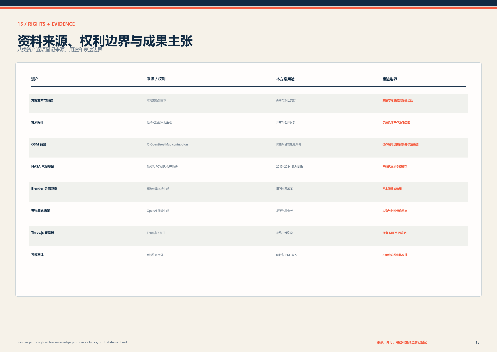
下一阶段资料清单包括正式总体及重点区边界、地形测绘、道路和地块红线、逐栋建筑及产权、文物保护、市政管线与容量、消防与交通模型、站点分时客流、现状无障碍障碍点、详细水文土壤及公众参与记录。资料纳入统一底图后，复算土地平衡和指标，形成可进入规划审查、可行性研究和工程设计的深化成果。
参考资料
任务依据包括征集公告、面向智能体任务书、仓库资料包、来源登记和处理事实导航。[source:OFFICIAL-ANNOUNCEMENT] [source:AGENT-TASKBOOK] [source:SOURCE-REGISTRY]
城市更新、慢行无障碍和气候适应依据包括《北京市城市更新条例》、北京步行和自行车交通环境规划设计标准、《无障碍环境建设法》、北京海绵城市及韧性城市相关标准。具体适用条款和设计参数在项目立项及专项设计阶段由具备相应资质的单位核对。[source:BEIJING-URBAN-RENEWAL-REGULATION] [source:ACCESSIBILITY-LAW-2023] [source:BEIJING-SPONGE-DESIGN-STANDARD]
交付证据索引
下列索引用于连接公开资料、规划标准、设计深度、空间图层和指标台账，供审查方定位原始记录与复算口径。
- 来源与方法：[source:SITE-PACKAGE] [source:SOURCE-REGISTRY] [source:PROCESSED-FACT-PACK] [source:BOUNDARY-SOURCE] [source:KEY-AREA-SOURCE] [source:OFFICIAL-ANNOUNCEMENT] [source:AGENT-TASKBOOK] [source:CASE-PARIS-15M] [source:CASE-VIENNA-GENDER] [source:CASE-PUNGGOL] [source:CASE-KALASATAMA] [source:CASE-BARCELONA-SUPERBLOCK] [source:CASE-KENDALL] [source:CASE-PARIS-SACLAY] [source:PRINCIPLE-UNHABITAT] [source:PRINCIPLE-NEB] [source:PRINCIPLE-AMSTERDAM-CIRCULAR] [source:OSM-CONTEXT-20260808] [source:NASA-POWER-2015-2024] [source:BEIJING-SPONGE-CITY] [source:BEIJING-RESILIENT-CITY] [source:BEIJING-CLIMATE-ADAPTATION] [source:BEIJING-RAIN-GARDEN-STANDARD] [source:BEIJING-URBAN-RENEWAL-REGULATION] [source:BEIJING-WALK-CYCLE-STANDARD] [source:ACCESSIBILITY-LAW-2023] [source:BEIJING-SPONGE-DESIGN-STANDARD] [source:BLENDER-52-MODEL] [source:THREEJS-OFFLINE-EXHIBIT] [source:OPENAI-IMAGEGEN-SCENES]
- 适用标准：[standard:PROJECT-OFFICIAL-ANNOUNCEMENT] [standard:PROJECT-AGENT-OPEN-CALL-TASKBOOK] [standard:MOHURD-URBAN-DESIGN-MEASURES] [standard:MOHURD-CONTROL-DETAILED-PLANNING] [standard:MNR-LAND-USE-CLASSIFICATION-GUIDE] [standard:MOHURD-ARCH-DESIGN-DEPTH-2016]
- 设计深度：[depth:existing_conditions_diagnosis] [depth:three_level_scope_framework] [depth:overall_spatial_structure] [depth:land_use_layout] [depth:development_intensity_controls] [depth:height_massing_character] [depth:retain_renovate_demolish] [depth:traffic_rail_slow_parking] [depth:municipal_new_infrastructure] [depth:blue_green_public_space] [depth:three_key_area_detailed_design] [depth:renewal_project_list] [depth:phasing_implementation] [depth:metrics_recalculation] [depth:risk_missing_data]
- 空间数据：[data:geometry/site_boundary.geojson] [data:geometry/key_areas.geojson] [data:geometry/land_use.geojson] [data:geometry/buildings.geojson] [data:geometry/roads.geojson] [data:geometry/green_space.geojson] [data:geometry/public_space.geojson] [data:geometry/constraints.geojson] [data:geometry/phasing.geojson]
- 指标台账：[metric:site_area_sqm] [metric:building_footprint_area_sqm] [metric:green_ratio] [metric:public_space_ratio] [metric:key_area_count] [metric:growth_station_count] [metric:ai_scenario_card_count] [metric:pilot_corridor_length_m] [metric:prototype_service_node_area_sqm] [metric:pilot_shared_ground_floor_area_sqm] [metric:implementation_project_count] [metric:acceptance_kpi_count] [metric:osm_context_feature_count] [metric:climate_heat_days_ge_35c_per_year] [metric:climate_annual_precip_mm] [metric:climate_mean_solar_kwh_m2_day] [metric:pilot_walk_clear_width_target_m] [metric:pilot_cycle_width_target_m] [metric:rest_point_spacing_target_max_m] [metric:shade_coverage_target_ratio] [metric:human_service_availability_target_ratio] [metric:protocol_service_pass_count] [metric:negative_test_caught_count]